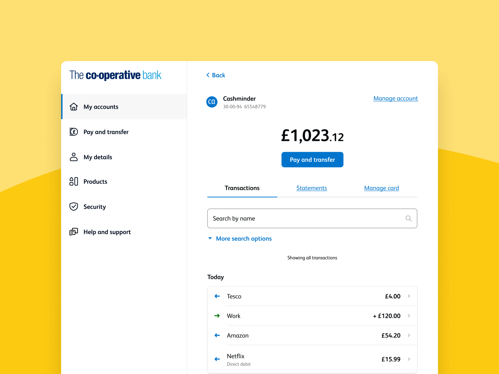
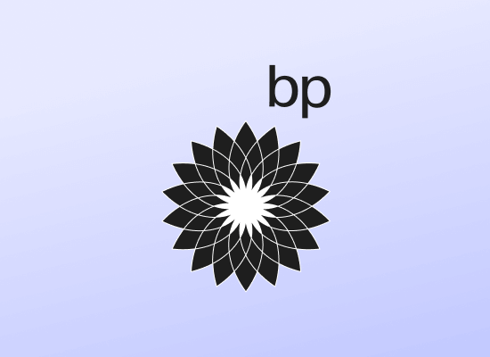

Shane Fadden is a product designer that currently resides in (the) Wirral, UK.
He was born in Dublin, and enjoys a large breakfast that sets him up for the day.
He’s spent the last couple of years as a Design Manager in the Co-op Bank. Here, he’s worked with some fantastic people helping an age-old institution redefine it’s design practice.
He's more of a generalist than a specialist, and enjoys thinking critically over shooting from the hip. Normally, he doesn’t speak in the third person.
Recent work
-
 Co-op bank payments
Case study
Co-op bank payments
Case study
-
 Measuring UX at Co-op bank Case study
Measuring UX at Co-op bank Case study
-  Quantifying a new IA Case study
-
 Building a design system for the Co-op Bank Case study
Building a design system for the Co-op Bank Case study
-  BPMe App store ↗
-
 Hell Pizza App store ↗
Hell Pizza App store ↗
- My Asthma App App store ↗